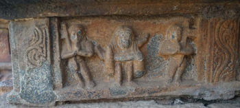
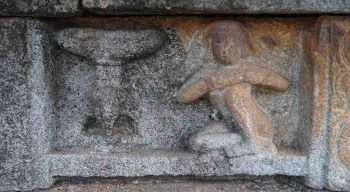
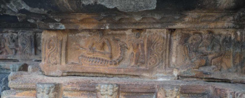
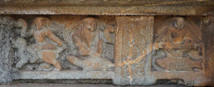
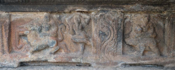
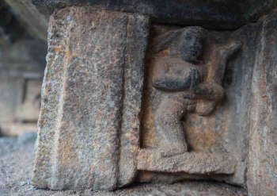
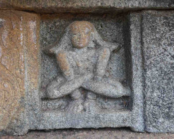
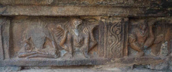

Shringeri
This is a selection of images of yoga postures depicted on the c. 16th-century Vidya Shankara temple at Shringeri, Karnataka. The photographs were taken by Dr Mallinson and Dr Bevilacqua in March 2016.







